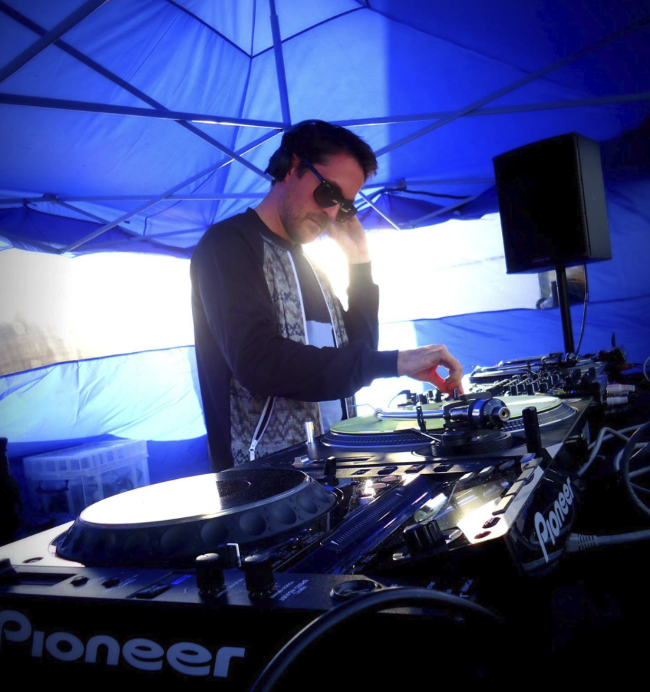
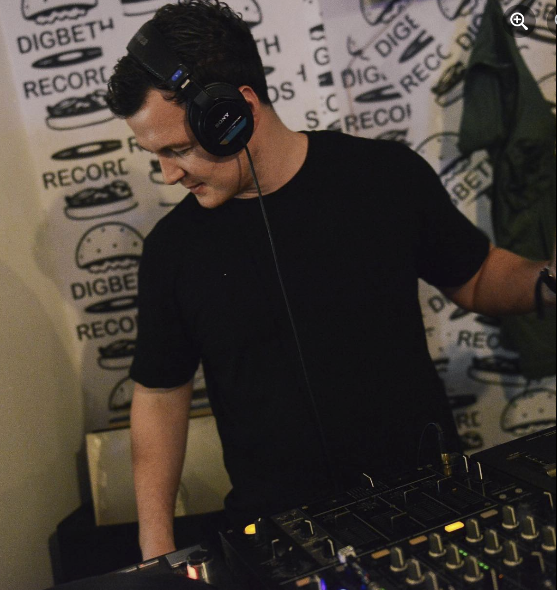
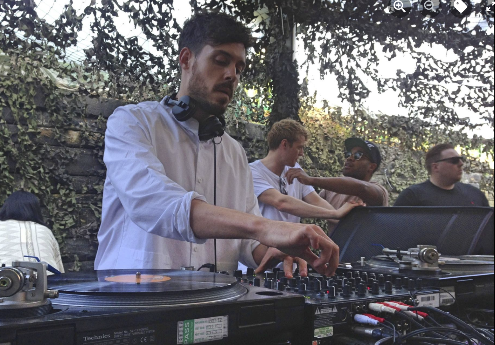

Tom Craven is co-founder of Evolve and is a name that is very well known on the underground music scene from his sets at Below, Dirty Disco and Tpot to name a few of the best house music events from around the country.
Lopaski co-founded Evolve with Tom back in 2015 and is a well known DJ on the Birmingham scene and has released a number of records on some of Europe's most reputable record labels.
Lewis Oxley has been resident for a number of Birmingham's best known parties in recent years. His tune selection is second to none.
